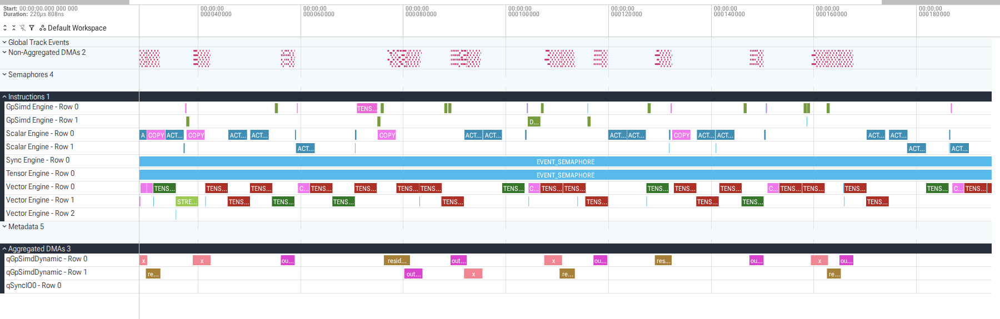
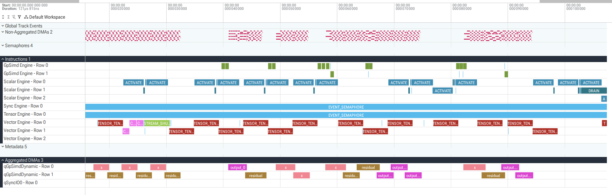

NKI Kernel Generation Using LLM Agents #
The methods developed across this section (iterative refinement, search, and inference-time scaling, all anchored to a trustworthy verifier) are already proven effective in production kernel generation. They share one lesson: an agent should not be asked to write a fast kernel in one unverified step. This demo puts them to work on NKI for AWS Trainium, following a more useful sequence:
- give the agent an executable reference and ask it to produce a correct NKI kernel;
- profile that baseline, inspect both the summary and timeline, and use a roofline model to choose an optimization direction; and
- ask the agent to implement that optimization, then repeat the same correctness and profiling gates.
The worked operator is a BF16 residual add followed by weighted RMSNorm over
1024 tokens with hidden size 4096: the input activations x and a residual
tensor a are summed elementwise, and that sum is then normalized by its
root-mean-square across the hidden dimension and rescaled by a learned
per-channel weight w. Writing r for the token index (r = 0, ..., 1023)
and h for the hidden index (h = 0, ..., 4095):
The token dimension indexes the R = 1024 rows and the hidden dimension indexes
the H = 4096 columns of a [1024, 4096] tensor; the RMS reduction runs along
h independently for every row r. Inputs and output are BF16 while the sum,
square, and reciprocal square root are computed in FP32, a precision split fixed
by the executable reference below.
On-chip memory places at most 128 rows on a tile’s partition dimension (the
layout constraint described in the next section), so the kernel cannot hold all
1024 token rows at once; it splits them into 1024 / 128 = 8 tiles of shape
[128, 4096], each carrying 128 token rows across the partitions and the full
4096-wide hidden dimension along the free axis. It streams these tiles through
on-chip memory one after another, loading each activation and residual tile from
HBM, computing on it, and storing the result, so the transfers for one tile can
overlap compute on another; the tiles are independent because the per-row RMS
reduction never crosses tile boundaries. Eight tiles is enough work to expose
sustained behavior: a single tile would be dominated by one-time startup and
would exercise each engine only once, whereas streaming eight drives the DMA,
Vector, and Scalar engines into a repeating rhythm long enough to measure their
true throughput and, crucially, how much DMA overlaps compute (the central
question of the profiling later in this demo). The complete source and test
harness are in rmsnorm_agent_lab.py, and the numbers
below come from second-execution captures on a Trn2 host using one NeuronCore:
each kernel is run once to warm up (paying one-time costs such as code load, DMA
queue setup, and instruction and data caching) and timed on the second run, so
the profile reflects steady-state execution rather than first-run overhead.
What you need to know about NKI #
NKI is a Python-embedded, tile-oriented language for NeuronCore [1]. A kernel author controls movement among three memory regions and maps work to specialized engines:
| Resource | Role in this demo |
|---|---|
| HBM | Holds kernel inputs and returned outputs |
| SBUF | Holds software-managed activation, weight, and scratch tiles |
| PSUM | Holds accumulations for operations such as matrix multiplication |
| DMA engines | Move tiles between HBM and on-chip memory |
| Vector and Scalar engines | Execute reductions, tensor operations, and nonlinear operations |
SBUF and PSUM are partitioned. The first axis of an on-chip tile is the partition dimension, with at most 128 partitions; the remaining axes are free dimensions. This demo maps 128 token rows to the partition dimension and the hidden dimension to a free dimension.
The standard imports are:
import nki
import nki.language as nl
import nki.isa as nisa
nl and nisa are normal aliases for nki.language and nki.isa.
nl.* expresses tile operations and leaves more lowering choices to the
compiler. nisa.* selects lower-level instructions when the profile shows
that more control is useful. Both are standard NKI [1, 2].
The distinction is easiest to see on the same computation. To turn a tile into
its per-row mean of squares, nl.* states the intent and lets the compiler
choose how to lower it:
mean_square = nl.mean(nl.square(summed, dtype=nl.float32), axis=1, keepdims=True)
That is two logical passes over the tile: square materializes a full
[128, 4096] intermediate, then mean reads it back to reduce along the hidden
axis. The equivalent nisa.* form names one hardware instruction that squares
and reduces in a single sweep, so the intermediate never lands in full:
nisa.activation(
dst=square_scratch, op=nl.square, data=summed,
reduce_op=nl.add, reduce_res=sum_square, # accumulate the row sum in the same pass
)
Both produce the same row statistic. The nl.* version is shorter and portable;
the nisa.* version trades that for explicit control over the fused reduction,
which is exactly the kind of rewrite the profiling later in this demo motivates.
Prefer nl.* by default and drop to nisa.* only where a measured bottleneck
justifies it.
Give the agent the context it cannot infer #
A capable coding agent can inspect a repository, but it should not be expected to reconstruct a changing accelerator stack from pretraining. Two limits are at work. The agent can read whatever is already in your files, so those do not need explaining; but NKI, the Trainium hardware specifications, and the exact API signatures all evolve after any model’s training cutoff, so the facts the agent memorized about them are stale or simply wrong. Supply those facts fresh instead of trusting recall. Give it a small context package whose authority is explicit, meaning every fact is tagged with the source that can be trusted and rechecked rather than assumed:
| Context | What the agent needs | Source of truth |
|---|---|---|
| Operator semantics | Reference implementation, equations, shapes, dtypes, layouts, side effects, and device boundary | Version-controlled contract and tests |
| Execution environment | Target accelerator, logical-core configuration, compile/run commands, artifact paths, and allowed resources | Harness configuration |
| Current NKI knowledge | Relevant language and ISA pages plus installed API signatures | Current documentation and installed package |
| Evaluation | Read-only oracle, adversarial cases, tolerances, warmup policy, and stopping rules | Executable harness |
| Performance evidence | Baseline source, summary JSON, roofline calculation, Perfetto trace, interval queries, and prior measurements | Retained run artifacts |
| Prior experience | Applicable successful and unsuccessful transformations, with measured outcomes | Optimization memory or a checked-in experiment log |
Read the third column as the discipline that keeps the package honest: every piece of context traces back to something version-controlled or freshly measured, never to the model’s assumptions. The rows also divide by how stable they are. Operator semantics, execution environment, and evaluation form the immutable contract that fixes what “correct” and “done” mean for this task; current NKI knowledge is ground truth read from the installed package and its documentation rather than from recall; and performance evidence and prior experience are artifacts that do not exist until actual runs produce them.
Do not paste an entire manual or raw trace into every prompt. The point is not to dump all of this at once but to keep the non-negotiables always visible (the correctness contract, the commands, and the acceptance rules) and let the agent retrieve an API page, compiler diagnostic, trace slice, or previous experiment only when it becomes relevant, so its attention stays on the task rather than on a wall of reference material. Context should also grow with the workflow, each stage adding evidence without touching the fixed contract: Stage 1 starts with semantics, environment, current APIs, and tests; Stage 2 adds the baseline profile and roofline; Stage 3 adds the current hypothesis and earlier attempts.
Retain measured optimization experience #
The last row of the table, prior experience, deserves its own treatment because how the agent remembers what it learned across rounds is easy to get wrong. AccelOpt formalizes its value [15]. Its planner proposes a transformation, its executor implements and measures it, and its summarizer distills code changes and general lessons from measured positive and negative kernel pairs into a bounded optimization memory (size-capped, so it cannot grow without limit) that conditions later rounds. Its ablation found that search with memory reached similar speedup in 13 rather than 16 iterations, reducing search cost by roughly 16-17%. Section 3.2 develops the full search method; the practical lesson here is to preserve an evidence-backed optimization episode, not the entire conversation:
context: residual RMSNorm, BF16 [1024, 4096], one NeuronCore
observation: compute union 190.251 us; DMA union 69.841 us
hypothesis: combine square and row reduction to shorten the Vector path
result: correct; 218.666 us -> 119.547 us; HBM bytes unchanged
scope: useful for this instruction chain; not evidence for every reduction
Each line is anchored to a measurement rather than an impression. The context
identifies the problem so the episode is retrieved only when it applies; the
observation records the measured bottleneck (compute time far exceeds DMA
time, so the kernel is compute-bound); the hypothesis states the idea that
followed (fuse the square and the row reduction, exactly the nl to nisa
rewrite shown earlier); the result gives the measured payoff (correct output,
218.666 to 119.547 us, with HBM traffic unchanged so the win came from
compute, not data movement); and the scope records honest limits so a later
round does not overgeneralize one success into a rule.
Current coding agents reduce the need to build a separate memory service for an interactive tutorial. Claude Code enables project auto memory by default, and Codex can extract and inject local memories across sessions once its memory feature is enabled [16, 17]. Use those systems for heuristics, failed directions, and pointers to relevant evidence. They do not automatically reproduce AccelOpt’s measurement-aware curation. Keep correctness contracts, commands, accepted measurements, and hardware facts in version-controlled files: automatic memory can be disabled, stale, or absent in another machine or execution environment, and it is never a replacement for remeasurement.
With the primer and context package in place, the three numbered stages below walk through the generate, profile, and optimize sequence in turn.
1. Generate a kernel from the reference #
Make the device boundary part of the contract #
The host/device boundary is a semantic requirement, not merely a placement preference. Unless the task explicitly permits a split implementation, every tensor operation that contributes to the requested output must execute inside the NKI kernel.
The rule matters because the agent is optimizing to pass a correctness check, and the cheapest way to pass one is often to compute the answer on the host with Torch or NumPy and hand the kernel a finished tensor to copy out. Such a candidate is correct yet hollow: the NKI kernel does no real work, so every profile, roofline, and speedup measured against it is meaningless. This is the kernel-generation form of the reward hacking that Section 2’s verifiable reward is built to prevent, and it is why the boundary belongs in the contract rather than left to the agent’s discretion. The two are different kinds of decision. Placement choices, which engine runs an operation or which memory holds a tile, are the agent’s to make in pursuit of speed; but whether a computation happens on the device at all decides whether the artifact is even the kernel that was requested, so it is a matter of correctness, not optimization. The table below draws the line, with the host confined to setup and judging and the device responsible for the entire requested operator.
| Host test harness | NKI kernel on the NeuronCore |
|---|---|
| Generate test inputs | Read the declared HBM inputs |
| Compute an independent reference result | Perform the complete requested operator |
| Compile, launch, synchronize, and time | Keep intermediate tensor values in SBUF or PSUM |
| Compare outputs and reject candidates | Write the declared output to HBM |
| Capture and query profiles | Use no Torch, NumPy, or CPU fallback to produce output values |
For example, if the task requests a convolution with padding, bias, and an
activation, the agent may not compute the padding, an im2col transform, the
convolution, or the epilogue with Torch on the host and wrap the result in a
nominal kernel. Those operations are device work because they are part of the
requested operator. Host preprocessing is allowed only when the contract
names it explicitly.
This distinction should appear directly in the generation prompt:
Implement the reference as one @nki.jit kernel.
Device boundary:
- Every tensor operation in the reference must run inside the NKI kernel.
- The returned value must be produced only from the declared device inputs
using NKI operations.
- Do not call Torch, NumPy, or CPU code to compute any part of that value.
- Host code may only create inputs, compute a separate oracle, compile,
launch, synchronize, test, and profile.
Before writing code, restate the equations, shapes, dtypes, layouts,
reduction axes, side effects, and host/device boundary. Wait for confirmation.
The restatement catches a misplaced operation before compilation, when it is cheapest to fix and before the agent has invested in a wrong structure. But a prompt is only advisory: it can be misread, and a plausible host wrapper can slip past a casual reading, so the boundary cannot rest on the prompt alone. The harness must still enforce it as the authoritative check: it owns the reference, passes the generated kernel itself to the runner, verifies that the declared inputs are unchanged, and rejects aliases or undeclared outputs. Prompt and harness are two layers guarding the same contract, the first to steer the agent and the second to make the rule impossible to evade.
Use an executable reference #
Natural language alone leaves important choices open. A phrase like “residual add followed by weighted RMSNorm” silently omits decisions that change the output: whether the epsilon sits inside or outside the square root, which axis the mean reduces over, whether the arithmetic runs in BF16 or FP32, and whether the weight multiplies before or after the cast back. Each is a fork the agent would otherwise resolve by guessing, and a plausible wrong guess still compiles and runs, so the ambiguity surfaces only as a numerical mismatch much later.
An executable reference closes every fork at once. Because it is runnable code rather than prose, it is unambiguous by construction (the interpreter admits only one reading) and it doubles as the oracle: the same function that documents the operator also generates the ground-truth outputs the harness checks candidates against, so specification and test can never drift apart. A compact Torch reference fixes the residual, reduction axis, epsilon placement, learned weight, and intermediate precision:
def residual_rms_norm_reference(x, residual, weight):
z = x.float() + residual.float()
inverse_rms = torch.rsqrt(
z.square().mean(dim=1, keepdim=True) + 1e-6
)
return (z * inverse_rms * weight.float()).to(torch.bfloat16)
Equivalently, for R = 1024 rows and hidden size H = 4096:
The executable reference does not replace the interface contract:
| Property | Fixed value |
|---|---|
| Inputs | Activations x, residual a, and weight w |
| Output | One tensor y; no aliases or side effects |
| Shapes | x, a, y: [1024, 4096]; w: [4096] |
| Layout | Contiguous row-major HBM tensors |
| Dtypes | BF16 inputs and output; FP32 arithmetic path |
| Reduction | Hidden axis, independently for every row |
| Epsilon | 1e-6, inside the reciprocal square root |
The reference pins the mathematics and the interface; it does not dictate how the kernel reaches that result. The agent may choose tiling, buffering, instruction selection, and scheduling, the degrees of freedom where performance is actually won. It may not change the equations, public shape, layout, dtypes, or test thresholds, because those define the operator the caller asked for and the terms on which every later measurement is judged. This is the same line drawn in the previous subsection, now made concrete: the reference and interface table are the immutable contract, and everything outside them is the search space the agent is free to explore.
Accept a simple first kernel #
The first generation should favor readable NKI over speculative tuning. The goal of Stage 1 is a kernel that is obviously correct, not one that is fast: a clear baseline is the fixed reference every later optimization is measured against, and speculative tuning applied before any profile exists is guessing, optimizing a bottleneck that has not been shown to exist. A simple kernel is also the one whose dataflow a reviewer, or the agent itself in a later round, can read and trust. The agent produced this baseline:
import nki
import nki.language as nl
TOKENS = 1024
TILE_TOKENS = 128
HIDDEN = 4096
NUM_TILES = TOKENS // TILE_TOKENS
EPS = 1e-6
@nki.jit
def residual_rms_norm_kernel(x, residual, weight):
assert x.shape == residual.shape == (TOKENS, HIDDEN)
assert x.dtype == residual.dtype == nl.bfloat16
assert weight.shape == (HIDDEN,)
assert weight.dtype == nl.bfloat16
out = nl.ndarray(x.shape, dtype=x.dtype, buffer=nl.shared_hbm)
weight_row = nl.load(weight.reshape((1, HIDDEN)))
weight_tile = nl.broadcast_to(
weight_row,
shape=(TILE_TOKENS, HIDDEN),
)
for tile_idx in range(NUM_TILES):
start = tile_idx * TILE_TOKENS
stop = start + TILE_TOKENS
x_tile = nl.load(x[start:stop, :])
residual_tile = nl.load(residual[start:stop, :])
summed = nl.add(x_tile, residual_tile, dtype=nl.float32)
mean_square = nl.mean(
nl.square(summed, dtype=nl.float32),
axis=1,
dtype=nl.float32,
keepdims=True,
)
inverse_rms = nl.rsqrt(
nl.add(mean_square, EPS, dtype=nl.float32),
dtype=nl.float32,
)
inverse_rms = nl.broadcast_to(
inverse_rms,
shape=(TILE_TOKENS, HIDDEN),
)
normalized = nl.multiply(
summed,
inverse_rms,
dtype=nl.float32,
)
y_tile = nl.multiply(normalized, weight_tile, dtype=x.dtype)
nl.store(out[start:stop, :], value=y_tile)
return out
The dataflow is easy to audit, which is the whole point of accepting it. Reading it against the memory and engine model from earlier, each line maps to a step in the contract:
- The assertions (
x.shape == ... (TOKENS, HIDDEN),dtype == nl.bfloat16) check the declared shapes and dtypes before any work, so a mismatched input fails loudly rather than producing a plausible wrong answer. out = nl.ndarray(..., buffer=nl.shared_hbm)allocates the single declared output in HBM, andweight_row = nl.load(...)brings the weight on chip once, outside the loop, since it is reused by every tile.for tile_idx in range(NUM_TILES)is the eight-tile stream made literal: a plain unrolledrangerather than a scheduling construct, so the order of loads, compute, and stores is exactly what the source says.- Inside the loop,
nl.load(x[start:stop, :])and the residual load move one[128, 4096]tile from HBM into SBUF;nl.add,nl.square,nl.mean,nl.rsqrt, and the twonl.multiplycalls are the reference equations in order, withdtype=nl.float32making the FP32 arithmetic path explicit; andnl.store(out[start:stop, :], ...)writes the finished tile back to HBM. - The two
nl.broadcast_tocalls implement the shape expansions the math needs: the[1, 4096]weight is broadcast across the 128 partitions, and each[128, 1]per-row statistic is broadcast across the 4096-wide free dimension, so both line up elementwise with the tile.
Nothing here is clever, and that is the value: every operation is on the device, every intermediate stays in FP32 as the contract requires, and the mapping from code to equations can be checked by eye. This readability is also what makes the Stage 2 profile actionable, since a bottleneck found in a transparent baseline points to a specific line to change.
Gate on correctness before profiling #
Correctness is the gate, and it comes before profiling for a reason: a speedup measured on a kernel that computes the wrong answer is worthless, and worse, it invites the agent to “optimize” by quietly dropping the work that made the kernel slow. Timing a candidate is only meaningful once that candidate is known to be correct, so the oracle runs first and a failure here stops the pipeline before any performance number is taken.
The oracle also checks more than one aggregate metric, because any single number can be passed by an output that is wrong in a way that number cannot see:
- exact shape, dtype, layout, output count, and non-aliasing behavior;
- unchanged inputs and finite outputs;
- elementwise
allclosewithatol = 2^-7andrtol = 1e-2; - maximum absolute error at most
2^-5; - mean absolute error at most
5e-5; and - cosine similarity of at least
0.9999.
The checks are layered so that each catches a different failure. The structural
checks (shape, dtype, layout, output count, non-aliasing, unchanged inputs,
finite outputs) confirm the kernel honors the interface and the device boundary
at all, before any value is compared. Three of these are easy to overlook:
non-aliasing means the output is its own buffer, not secretly the same memory as
an input; unchanged inputs means x, a, and w hold their original values
after the run, since the operator is a pure function; and finite outputs means
no NaN or Inf, which a dropped epsilon or a BF16 overflow would produce and
which would make the tolerance checks below meaningless. The elementwise allclose bounds the
error at every position, so no single element may drift far even if the average
looks fine; the mean absolute error bounds the typical drift, so many small
biased errors cannot hide under a lenient per-element tolerance; and the cosine
similarity guards the overall shape of the output, catching a systematic scale
or direction error that per-element tolerances might individually admit. A
correct kernel must pass all of them at once.
These tolerances belong to this BF16 contract, not to RMSNorm in general. They
are loose enough to admit the rounding a legitimate BF16 kernel incurs (its
FP32-versus-BF16 accumulation order will not match the reference bit for bit)
yet tight enough to reject a genuinely wrong result; a different dtype or
operator would set different thresholds. The test set is likewise adversarial by
design rather than random: it includes zeros, constants with nonuniform weights,
alternating signs, small and large finite values, exact residual cancellation,
and two independent random seeds [10]. Each targets a way the operator can break
that typical random inputs would miss, such as cancellation exercising the
residual add where x and a sum to zero, and the mix of magnitudes stressing
the FP32 reduction, so a kernel that passes has been tried against the hard
cases, not just the easy average.
Run the baseline on an available core:
source /opt/nki-venv/bin/activate
export NEURON_RT_VISIBLE_CORES=0
export NEURON_LOGICAL_NC_CONFIG=1
export NEURON_PLATFORM_TARGET_OVERRIDE=trn2
python content/docs/section-3/subsection-5/rmsnorm_agent_lab.py \
--kernel baseline
The two random cases returned:
random_seed_7 allclose=True max_abs=0.015625 mean_abs=3.506939e-07 cosine=0.9999999986
random_seed_2026 allclose=True max_abs=0.015625 mean_abs=3.251807e-07 cosine=0.9999999989
The structured cases also passed. Only now does performance become a valid objective.
2. Profile the baseline and choose a direction #
A correct kernel is only the starting point; this stage decides what to make faster and, just as importantly, what not to bother with. The direction is chosen from measurement rather than intuition, and the evidence is built up in layers: a repeatable capture, cheap summary counters, the timeline and its interval queries, and finally a roofline that fixes the theoretical limit. Each layer answers a question the previous one cannot, and the goal throughout is to separate what the operator is fundamentally limited by from what this particular implementation is limited by, because those two answers turn out to differ.
Capture a repeatable execution #
Every number that follows is only as trustworthy as the run it came from, so the capture is made reproducible before anything is measured. Preserve the standalone executable in a fresh artifact directory:
ARTIFACTS_DIR="$(mktemp -d /tmp/rmsnorm-nki.XXXXXX)"
export NKI_ARTIFACTS_DIR="$ARTIFACTS_DIR"
python content/docs/section-3/subsection-5/rmsnorm_agent_lab.py \
--kernel baseline
Capture the second execution so the profile does not describe first-run
effects. The first run pays one-time costs (code load, DMA queue setup, and
instruction and data caching) that have nothing to do with steady-state
performance; --num-exec=2 --profile-nth-exec=2 runs the kernel twice and
records only the second, so the trace reflects the behavior an optimization
would actually change:
neuron-explorer capture \
-n "$ARTIFACTS_DIR/kernel.neff" \
-s "$ARTIFACTS_DIR/rmsnorm.ntff" \
--num-exec=2 \
--profile-nth-exec=2 \
--enable-dge-notifs
NTFF="$ARTIFACTS_DIR/rmsnorm_exec_2.ntff"
The NEFF (Neuron Executable File Format) is the compiled executable and the NTFF (Neuron Trace File Format) is its captured trace. Keep them together because Neuron Explorer uses metadata from both [5, 6].
Start with the profile summary #
Begin with the cheapest view. The summary is a handful of aggregate counters that says how much of each resource the run consumed, which is enough to see where time concentrates and to feed the roofline, without yet paying the cost of reading a full timeline. Ask for a small set of counters before opening the timeline:
neuron-explorer view \
--output-format summary-json \
-n "$ARTIFACTS_DIR/kernel.neff" \
-s "$NTFF" > "$ARTIFACTS_DIR/summary.json"
jq 'to_entries[0].value | {
latency_us: (.total_exec_time * 1e6),
hbm_read_bytes,
hbm_write_bytes,
dma_transfer_us: (.dma_transfer_time * 1e6),
vector_active_us: (.vector_engine_active_time * 1e6),
scalar_active_us: (.scalar_engine_active_time * 1e6)
}' "$ARTIFACTS_DIR/summary.json"
The representative baseline capture was:
| Profile summary | Baseline |
|---|---|
| Latency | 218.666 us |
| HBM read | 16.008 MiB |
| HBM write | 8.000 MiB |
| DMA transfer time | 76.154 us |
| Vector Engine active time | 162.230 us |
| Scalar Engine active time | 78.340 us |
Read against a 218.666 us latency, the counters already point somewhere: the
Vector Engine is active for 162.230 us, most of the run, while DMA transfers
take 76.154 us and the Scalar Engine 78.340 us. Vector work clearly
dominates. But the summary says only that this work is long, not whether it
overlaps DMA and so hides behind it, nor whether it is one necessary chain or
several redundant instructions that could be fused. Totals cannot show
structure, and structure is what determines the optimization. Export the same
capture to Perfetto to see it [7]:
neuron-explorer view \
--output-format perfetto \
--output-file "$ARTIFACTS_DIR/rmsnorm.pftrace" \
-n "$ARTIFACTS_DIR/kernel.neff" \
-s "$NTFF"

Baseline timeline at a 0-220 us zoom. The activation and residual loads and
output stores overlap some compute, but separate reduction, copy, broadcast,
and multiply instructions leave a long Vector and Scalar path.
Reading this view takes a little orientation. Each horizontal lane is a
track, one source of events over time, and each colored bar on it is a
slice with a start and an end. The tracks fall into three groups. The
Aggregated DMAs group (qGpSimdDynamic, qSyncIO0) is data movement: the
x, residual, and output_0 bars there are the transfers between HBM and
on-chip memory. The Instructions group (Vector Engine, Scalar Engine,
GpSimd Engine) is compute. The Semaphores group holds the idle waits. One
name is easy to misread: qGpSimdDynamic is a DMA queue track (the leading
q), distinct from the GpSimd Engine instruction track, even though both
carry “GpSimd” because that engine issues the dynamic transfers; the queue bars
are DMA, the engine bars are compute.
A single engine also appears as several stacked rows, such as Vector Engine
Rows 0, 1, and 2. This is one engine, not three: when its recorded slices
overlap in time, the profiler stacks them onto sub-rows so they do not collide,
so the row count is the depth of overlap, which is why the busier Row 0 fills
while Row 2 is nearly empty. The overlap reflects instructions whose recorded
intervals abut or nest (a SIMD engine applies one instruction across many lanes
at once and pipelines successive instructions) rather than three independent
computations running in parallel. The practical consequence is that a single
engine’s time is spread across its rows and those slices overlap, so it cannot
be totaled by summing durations.
For agent analysis, visual inspection should therefore be paired with interval
queries [8]. The same overlap that stacks one engine into rows also holds across
engines, since DMA and compute run in parallel, so summing durations
double-counts: if one transfer runs 0-10 us and another runs 5-15 us, the
wall-clock time with DMA active is 15 us, not the 20 us the durations sum to.
The honest quantity is the interval union, the total time during which at
least one slice of a given kind is active, counting each moment once. The queries
below compute three such figures: the union of bulk-DMA time, the union of
useful-compute time, and their intersection, the time when both are active
at once.
The selected bulk-DMA union is 69.841 us, useful-compute union is
190.251 us, and their intersection is 56.336 us. Two conclusions follow, and
together they set the optimization direction. First, 56.336 / 69.841 = 80.7%
of the DMA interval overlaps useful compute, so most data movement is already
hidden behind computation rather than stalling the kernel. Second, the compute
union is almost three times the DMA union. Because the engines run concurrently,
runtime is governed by the longer of the two, so the long compute chain, not
data movement, is what stretches this kernel out. Shortening that chain is the
lever; making DMA faster would buy almost nothing.
Exact Perfetto interval-union query
Raw Perfetto tracks contain overlapping slices. Summing their durations
double-counts time, so the query merges each class before intersecting them.
The useful CTE first selects and labels only the slices that count as dma
or compute; the running, marked, and grouped CTEs are the standard
merge-overlapping-intervals sweep, sorting slices by start time and opening a
new group only where a gap appears; merged collapses each group to a single
interval; and the final query sums those non-overlapping intervals and measures
the DMA-compute overlap:
curl -LO https://get.perfetto.dev/trace_processor
chmod +x trace_processor
./trace_processor query "$ARTIFACTS_DIR/rmsnorm.pftrace" \
"WITH useful AS (
SELECT CASE
WHEN t.name GLOB 'qGpSimdDynamic*' THEN 'dma'
ELSE 'compute'
END AS kind,
s.ts AS start,
s.ts + s.dur AS finish
FROM slice AS s
JOIN track AS t ON t.id = s.track_id
WHERE s.dur > 0
AND ((t.name GLOB 'qGpSimdDynamic*'
AND s.name IN ('x', 'residual', 'output_0'))
OR (t.name GLOB 'Vector Engine*'
AND s.name IN ('TENSOR_TENSOR', 'TENSOR_REDUCE',
'COPY', 'STREAM_SHUFFLE'))
OR (t.name GLOB 'Scalar Engine*'
AND s.name IN ('ACTIVATE', 'COPY',
'ACTIVATION_READ_ACCUMULATOR')))
),
running AS (
SELECT *,
MAX(finish) OVER (
PARTITION BY kind
ORDER BY start, finish
ROWS BETWEEN UNBOUNDED PRECEDING AND 1 PRECEDING
) AS prior_finish
FROM useful
),
marked AS (
SELECT *,
CASE WHEN prior_finish IS NULL OR start > prior_finish
THEN 1 ELSE 0 END AS new_group
FROM running
),
grouped AS (
SELECT *,
SUM(new_group) OVER (
PARTITION BY kind ORDER BY start, finish
) AS interval_group
FROM marked
),
merged AS (
SELECT kind, interval_group,
MIN(start) AS start,
MAX(finish) AS finish
FROM grouped
GROUP BY kind, interval_group
),
dma AS (
SELECT start, finish FROM merged WHERE kind = 'dma'
),
compute AS (
SELECT start, finish FROM merged WHERE kind = 'compute'
)
SELECT
ROUND((SELECT SUM(finish-start) FROM dma)/1000.0, 3)
AS dma_union_us,
ROUND((SELECT SUM(finish-start) FROM compute)/1000.0, 3)
AS compute_union_us,
ROUND(COALESCE(SUM(MAX(
0,
MIN(d.finish,c.finish)-MAX(d.start,c.start)
)), 0)/1000.0, 3) AS overlap_us
FROM dma AS d CROSS JOIN compute AS c"
Four details prevent common misreadings, each one a slice the query must deliberately keep or exclude:
- On the
qGpSimdDynamicqueue track,x,residual, andoutput_0are the profiler’s labels for the slices that load the activations, load the residual, and store the one declared output. These three are the bulk transfers the contract requires, which is why the filter names exactly them. The summary byte count also includes the small weight load, so it reads slightly higher than the bulk-DMA union. EVENT_SEMAPHOREis a dependency wait, not arithmetic. On the timeline it appears as a single bar spanning the full220 uson the Tensor Engine and Sync Engine rows, which is tempting to read as those engines being busy the whole time. It is the opposite: the bar is long because the engine is idle, blocked on a semaphore. The Tensor Engine waits the entire kernel because this operator has no matrix multiply for it to run, so counting that bar as compute would fabricate220 usof work that never happened. The filter admits only named Vector and Scalar instructions and never these rows.- Summing per-engine DMA tracks double-counts concurrent transfers, the same overlap problem the interval union exists to solve.
- The model-FLOP field is a derived estimate the profiler can only fill in when it has a full model graph to count operations from. A standalone NKI capture gives it no such context, so the field defaults to zero. That zero is missing data, not a measurement: it does not mean the kernel has no arithmetic, and feeding it into the roofline that follows (which needs a FLOP count) would collapse the intensity to zero and corrupt the classification. The roofline below instead derives the FLOP count by hand from the operator definition.
Put the fixed operator on a roofline #
Use the roofline model from Section 1.3 [11]. Let N = RH = 4,194,304 be the
number of activation elements. BF16 occupies two bytes. The fixed interface
reads x and residual, reads the weight once, and writes y:
Each term is a direct count. In Q_min the three 2N terms are the reads of
x and residual and the write of y, each a [1024, 4096] BF16 tensor,
and the 2H term loads the weight vector once; these are the bytes the
interface forces across HBM, so no implementation can move fewer. In
F_useful the terms follow the operator left to right: N for the residual
add, N for the per-element square, N - R for the row reductions (H - 1
adds across each of R rows), R for the 1/H scaling, R for adding
epsilon, then N and N for scaling every element by its row inverse-RMS
and by the weight. I divides the two, useful FLOPs per byte moved, a
property of the operator that no rewrite can change.
The FLOP count leaves the reciprocal-square-root evaluations separate because
there is no universal FLOP equivalent for a special-function instruction: a
seed lookup with one or two Newton refinement steps could be scored as a
single operation or as ten to twenty, and any choice is arbitrary. Leaving it
out is safe because rsqrt runs once per row, so there are only R = 1024 of
them against the 5N + R element-wise and reduction FLOPs. Even a generous 20
FLOP-equivalents each adds 20R, about 0.1% of F_useful, moving I from
0.8331 to roughly 0.8339; the operator would have to more than triple its
intensity to reach I_ridge, so the term cannot change the classification. It
does bear on latency rather than intensity: each row’s scale sits on the
critical dependency chain, which is part of why the measured baseline below is
compute-limited.
The official DMA guide specifies 16 DMA engines per NeuronCore at 23 B/ns
per engine, an aggregate ceiling of 368 GB/s [12]. It recommends at least
4 KiB of contiguous data per partition for saturation; each activation row
here supplies 8 KiB. The architecture guide reports 1.0 TFLOP/s of FP32
Vector Engine throughput [3].
Reading these in order: B_DMA,max is the aggregate HBM bandwidth, 16 engines
at 23 B/ns. I_ridge is the ridge point, peak compute divided by peak
bandwidth, the intensity at which a kernel switches from memory-bound to
compute-bound. P_roof(I) is the highest throughput this operator can reach at
its own intensity: on the memory leg it is I times bandwidth, so even a
perfect kernel tops out near 306.6 GFLOP/s rather than the 1.0 TFLOP/s
compute peak. t_HBM,min is the time floor set by traffic alone, Q_min
divided by bandwidth, the fastest any implementation could finish given the
bytes it must move.
Since I < I_ridge, the operator lies on the memory leg of the ideal
roofline. That is a statement about the best implementation of this fixed
workload. It does not imply that the current implementation is waiting on
memory.
The measured baseline tells a different, compatible story:
| Baseline-derived metric | Value |
|---|---|
| Useful throughput | 95.9 GFLOP/s |
| Fraction of nominal roof | 31.3% |
| Bandwidth while DMA is active | 330.6 GB/s |
| Per-core DMA ceiling efficiency | 89.8% |
| End-to-end effective bandwidth | 115.1 GB/s |
| Runtime / HBM-only lower bound | 3.20x |
| Useful compute union / bulk-DMA union | 190.251 / 69.841 us |
The two bandwidth rows measure the same required traffic over different
windows. End-to-end effective bandwidth divides by the full runtime
(Q_min / 218.7 us approx 115.1 GB/s), so idle DMA time pulls it down.
Bandwidth while DMA is active divides by only the span in which the engines
are busy, so it runs about three times higher at 330.6 GB/s; dividing that
by the 368 GB/s ceiling gives the 89.8% per-core efficiency. That busy
span is the full DMA-active window, wider than the bulk-DMA union in the last
row, so the two do not share a denominator. Taken together, the transfers are
near-optimal whenever they run and the engines sit idle for much of the
runtime, waiting on compute.
The DMA engines already approach their documented ceiling while active, and the profile reports the minimum required HBM traffic. The long compute union and separate Vector operations make this baseline compute/dependency limited, even though the ideal roofline classifies the operator itself as memory-bound. The first optimization should shorten the instruction chain, not attempt to remove bytes that the ABI requires.
Give the evidence back to the agent #
This is where the loop closes. Stages 1 and 2 produced evidence the agent cannot re-derive from the source alone, so the next prompt hands it back and asks the agent to optimize against measurement rather than guesswork. It carries the immutable contract, baseline source, correctness results, summary JSON, Perfetto trace, roofline calculation, and current NKI API references:
Optimize this kernel without changing its equations, inputs, output, shape,
layout, dtype path, tests, benchmark, or profiler command.
Before editing:
1. reconcile the ideal roofline classification with the measured bottleneck;
2. quantify useful DMA, useful compute, and their overlap from interval unions;
3. identify the longest avoidable instruction chain in the trace;
4. inspect the installed nki.language and nki.isa APIs for a way to combine
adjacent work or remove an intermediate dependency;
5. state one falsifiable hypothesis, including counters expected to change
and counters expected to remain constant; and
6. name the correctness cases most likely to reject the change.
Implement one candidate. Run every correctness gate and recapture the same
workload. Keep the change only if the measured counters support the hypothesis.
The six numbered steps force the agent to reason before it edits. Steps 1 through 4 make it read the evidence: reconcile the ideal classification with the measured bottleneck, quantify the interval unions, find the longest avoidable chain, and check what the installed API actually offers. The final line then binds any change to the correctness gates and a fresh capture. Steps 5 and 6 are the ones that turn this from a request into a falsifiable experiment.
Step 3’s “longest avoidable instruction chain” is the highest-value target, so
it is worth being precise about. A chain here is a run of instructions linked
by data, where each one needs the previous result before it can start: the
residual add feeds the square, which feeds the row reduction, which feeds the
mean, the reciprocal square root, and finally the per-element normalization.
The hardware can run unrelated instructions on different engines in parallel,
but it cannot overlap two links of the same chain, so their durations add up.
The longest such chain is the critical path: the kernel cannot finish until it
does, which is why the measured baseline shows a compute union of 190.25 us
sitting far above the 69.84 us DMA union. Avoidable means the link exists
because of how the kernel was written, not because the math requires it. The
reduction must follow the square, and normalization must follow the reciprocal
square root, so those orderings are intrinsic. But the baseline computes the
square as one Vector instruction and then reduces the intermediate in a
separate one, and nisa.activation can square and accumulate the row sum in a
single instruction. That pair is one avoidable link on the critical path, and
collapsing it is the only kind of change that shortens runtime rather than
shaving already-idle engines.
Step 5 asks for one falsifiable hypothesis, split into counters expected to change and counters expected to hold. A counter is a quantity the profiler measures directly, such as HBM bytes moved, DMA active time, or Vector Engine active time, rather than something the code asserts, so it can settle the prediction objectively and cannot be argued past. A hypothesis phrased this way can be proven wrong by the next profile, which is what makes the optimization loop self-correcting rather than a sequence of hopeful rewrites. Naming the counters that should stay constant matters as much as naming the ones that should move: if a change is supposed to shorten the Vector path without touching data movement, then HBM bytes and DMA active time must not change, and if they do, the rewrite did something other than what was claimed. This is also the guardrail against reward hacking from Section 2. An agent optimizing for latency alone might quietly drop a term, narrow the dtype, or skip a row; a pre-committed prediction of which counters hold fixed makes that kind of shortcut show up as a failed prediction, not a faster number.
Step 6 asks the agent to name the correctness cases most likely to reject the change. This is adversarial self-review before any code exists. If fusing the square and reduction changes accumulation order, the case most likely to break is the large-magnitude or mixed-sign row where BF16 rounding is most sensitive; if a broadcast is reshaped, the single-row or boundary-tile case is the one to watch. Forcing the agent to predict its own most probable failure focuses the correctness gate on the rows that matter and exposes a shaky change before it is written, rather than after a full profile. Together, steps 5 and 6 mean the agent commits to what success and failure each look like before it edits, so the recapture can only confirm or refute a claim already on the table.
From this evidence, the agent proposed that combining the square and row reduction into one operation would shorten the Vector path. Its step-5 hypothesis predicted unchanged HBM bytes and DMA active time (data movement untouched), lower Vector Engine active time and a shorter compute union (the fused chain), and lower end-to-end latency (the payoff). Its step-6 answer flagged the numerically sensitive rows, where fusing the reduction could shift BF16 rounding, as the cases most likely to reject the change.
3. Execute and verify the optimization #
Implement one profile-derived change #
After inspecting the installed ISA, the agent used nisa.activation to apply
the square and reduce its result in one operation [13]. It then used a
per-row nisa.tensor_scalar broadcast for normalization [14]:
@nki.jit
def residual_rms_norm_fused_kernel(x, residual, weight):
assert x.shape == residual.shape == (TOKENS, HIDDEN)
assert x.dtype == residual.dtype == nl.bfloat16
assert weight.shape == (HIDDEN,)
assert weight.dtype == nl.bfloat16
out = nl.ndarray(x.shape, dtype=x.dtype, buffer=nl.shared_hbm)
weight_row = nl.load(weight.reshape((1, HIDDEN)))
weight_tile = nl.broadcast_to(
weight_row,
shape=(TILE_TOKENS, HIDDEN),
)
for tile_idx in range(NUM_TILES):
start = tile_idx * TILE_TOKENS
stop = start + TILE_TOKENS
x_tile = nl.ndarray(
(TILE_TOKENS, HIDDEN), dtype=x.dtype, buffer=nl.sbuf
)
residual_tile = nl.ndarray(
(TILE_TOKENS, HIDDEN),
dtype=residual.dtype,
buffer=nl.sbuf,
)
summed = nl.ndarray(
(TILE_TOKENS, HIDDEN), dtype=nl.float32, buffer=nl.sbuf
)
square_scratch = nl.ndarray(
(TILE_TOKENS, HIDDEN), dtype=nl.float32, buffer=nl.sbuf
)
sum_square = nl.ndarray(
(TILE_TOKENS, 1), dtype=nl.float32, buffer=nl.sbuf
)
nisa.dma_copy(dst=x_tile, src=x[start:stop, :])
nisa.dma_copy(
dst=residual_tile,
src=residual[start:stop, :],
)
nisa.tensor_tensor(
dst=summed,
data1=x_tile,
data2=residual_tile,
op=nl.add,
)
nisa.activation(
dst=square_scratch,
op=nl.square,
data=summed,
reduce_op=nl.add,
reduce_res=sum_square,
reduce_cmd=nisa.reduce_cmd.reset_reduce,
)
nisa.activation(
dst=sum_square,
op=nl.rsqrt,
data=sum_square,
scale=1.0 / HIDDEN,
bias=EPS,
)
nisa.tensor_scalar(
dst=summed,
data=summed,
op0=nl.multiply,
operand0=sum_square,
)
nisa.tensor_tensor(
dst=x_tile,
data1=summed,
data2=weight_tile,
op=nl.multiply,
)
nisa.dma_copy(dst=out[start:stop, :], src=x_tile)
return out
The one profile-derived change is the fused nisa.activation that squares
summed and accumulates its row sum in a single pass: op=nl.square performs
the square while reduce_op=nl.add and reduce_res=sum_square write the
per-row total, collapsing the baseline’s two dependent Vector instructions into
one. That is the avoidable link from step 3, and it is the whole optimization.
Everything around it is the baseline’s arithmetic re-expressed in the ISA: the
following nisa.activation folds the 1/H scale and the epsilon bias into a
single rsqrt, nisa.tensor_scalar broadcasts each row’s scalar across its
elements for normalization, and the two nisa.tensor_tensor calls apply the
residual add and the final weight multiply. The square/reduction path and
subsequent activation use FP32, preserving the dtype contract, and the explicit
reset_reduce starts a new row reduction on every tile [13].
Repeat correctness before accepting speed #
Run both kernels through the same read-only oracle:
python content/docs/section-3/subsection-5/rmsnorm_agent_lab.py \
--kernel both
The random cases produced:
[baseline]
random_seed_7 allclose=True max_abs=0.015625 mean_abs=3.506939e-07 cosine=0.9999999986
random_seed_2026 allclose=True max_abs=0.015625 mean_abs=3.251807e-07 cosine=0.9999999989
[fused]
random_seed_7 allclose=True max_abs=0.031250 mean_abs=1.073323e-05 cosine=0.9999999617
random_seed_2026 allclose=True max_abs=0.031250 mean_abs=1.151147e-05 cosine=0.9999999593
Zeros, constants, alternating signs, small and large values, and exact residual cancellation also passed. The different error distribution is expected from the changed reduction sequence, but it remains inside the predeclared budget.
Recapture and compare the same evidence #
Compile the candidate into a separate fresh artifact directory and repeat the same second-execution capture, summary query, Perfetto export, and interval query. Representative captures and two repeats of each executable gave:
| Profile summary | Baseline | Agent candidate |
|---|---|---|
| Representative latency | 218.666 us |
119.547 us |
| Three-capture latency range | 216.276-218.846 us |
119.547-120.057 us |
| HBM read | 16.008 MiB |
16.008 MiB |
| HBM write | 8.000 MiB |
8.000 MiB |
| DMA transfer time | 76.154 us |
77.454 us |
| Vector Engine active time | 162.230 us |
80.167 us |
| Scalar Engine active time | 78.340 us |
68.926 us |

Candidate timeline at a 0-120 us zoom. The same eight activation and
residual loads and output stores remain, while the repeated compute chain is
shorter and overlaps a larger fraction of the DMA span.
The interval and roofline-derived comparison is:
| Derived metric | Baseline | Agent candidate |
|---|---|---|
| Bulk-DMA union | 69.841 us |
68.457 us |
| Useful-compute union | 190.251 us |
99.922 us |
| DMA/compute intersection | 56.336 us |
61.849 us |
| Fraction of DMA union overlapped | 80.7% |
90.3% |
| Useful throughput | 95.9 GFLOP/s |
175.4 GFLOP/s |
| Fraction of nominal roof | 31.3% |
57.2% |
| Bandwidth while DMA is active | 330.6 GB/s |
325.0 GB/s |
| End-to-end effective bandwidth | 115.1 GB/s |
210.6 GB/s |
| Runtime / HBM-only lower bound | 3.20x |
1.75x |
The candidate is 1.83x faster, a 45.3% latency reduction. HBM traffic and
DMA duration are effectively unchanged, while Vector Engine active time falls
by 82.063 us and useful-compute union falls by 90.329 us. That is the
signature predicted by the agent’s hypothesis.
The candidate has moved upward toward the memory roof at the same arithmetic
intensity, but it has not reached it. Useful compute still spans 99.922 us
while bulk DMA spans 68.457 us; compute extends to about 115.3 us, followed
by the final output-DMA tail. This implementation is therefore still
compute/dependency limited, despite the fixed operator’s ideal
memory-bound classification.
The next agent turn should again follow evidence. It can inspect the remaining Scalar and Vector slices, test a scheduling change only where the timeline shows a bubble, or renegotiate a wider fusion contract that keeps output in SBUF for a downstream consumer. It should not add unused arithmetic to inflate intensity or claim bandwidth saved when the profile reports unchanged bytes.
Integrate the accepted kernel #
Standalone acceptance is not framework acceptance. Exercise the kernel at each intended call site after the optimization loop.
PyTorch and JAX #
An @nki.jit call with a PyTorch/XLA or JAX device tensor is lowered as a
custom operation in the surrounding graph [4]. The same kernel that ran
standalone becomes a single node the XLA compiler schedules alongside the rest
of the model, so the integration test is checking that the device boundary
holds inside a real graph, not re-testing the kernel arithmetic. A concise
PyTorch/XLA check is:
import torch
import torch_xla
from rmsnorm_agent_lab import EPS, residual_rms_norm_fused_kernel
x_cpu = torch.randn((1024, 4096), dtype=torch.bfloat16)
residual_cpu = torch.randn_like(x_cpu)
weight_cpu = torch.empty((4096,), dtype=torch.bfloat16).uniform_(0.75, 1.25)
z = x_cpu.float() + residual_cpu.float()
reference = (
z
* torch.rsqrt(z.square().mean(dim=1, keepdim=True) + EPS)
* weight_cpu.float()
).bfloat16()
device = torch_xla.device()
actual = residual_rms_norm_fused_kernel(
x_cpu.to(device),
residual_cpu.to(device),
weight_cpu.to(device),
)
torch_xla.sync(wait=True)
assert torch.allclose(actual.cpu(), reference, atol=2**-7, rtol=1e-2)
The check mirrors the standalone oracle so a framework-level regression cannot
hide. The reference is built on the host in FP32 and cast to BF16 only at the
end, matching the kernel’s FP32-arithmetic, BF16-I/O path, so the two agree by
construction rather than by luck. Moving the inputs with .to(device) is what
forces the @nki.jit lowering; torch_xla.sync(wait=True) then runs the lazy
graph and blocks until the device result is ready, without which the following
comparison would read an unmaterialized tensor. The atol=2**-7, rtol=1e-2
tolerances are the same predeclared BF16 budget the correctness gate used, so a
change that passed standalone but drifts once XLA fuses the surrounding graph
still gets caught. The JAX path is analogous: pass device arrays into the same
@nki.jit kernel and it lowers as a custom call in the JAX graph the same way.
Inference integration does not create a gradient rule. Training requires a real backward implementation and a separate mathematical contract, correctness suite, and profile.
NKIPy #
NKIPy is an open-source framework
maintained by our team. It offers a NumPy-like traced graph and an explicit
nki_custom_op boundary. It still uses the Neuron Compiler and Tensorizer to
lower and package the graph and custom call, then executes the resulting NEFF
through its runtime [9]. It is the second call site to check because it
exercises a different lowering path than XLA. On the XLA path the kernel’s
operations are lowered into the same graph as their neighbors, and the compiler
optimizes across that whole graph: it can fold an adjacent operation into the
kernel, reassociate arithmetic that touches its inputs, or impose a global
tensor layout, so the kernel loses its identity as a discrete unit. NKIPy does
the opposite. It wraps the kernel as an explicit custom operation, a single
opaque node with a declared shape, dtype, and stride contract that the compiler
schedules around but never looks inside; the arithmetic runs exactly as
written, isolated from the surrounding graph. The two paths therefore fail in
different ways. The XLA path can drift through cross-boundary optimization,
while the custom-op path can break on a mismatched boundary contract, so a
kernel that satisfies one can still fail the other. Verifying both is what
turns standalone acceptance into framework acceptance.
Framework integration can shift the output without touching a line of the
kernel, which is why the check is not redundant with the standalone gate. The
custom-op boundary declares the shapes, strides, and dtype the kernel expects;
if the traced graph feeds a non-contiguous view or coerces a dtype at the
boundary, the kernel runs on different data than the gate validated. Buffer
reuse is the sharpest risk here, because this kernel writes scratch back into
x_tile and summed: if the runtime aliases an input buffer to the output to
save memory, an in-place write can corrupt an input that a later consumer still
needs. And because @baremetal_jit traces lazily, nothing executes until the
graph is run, so a comparison that reads before materialization would test a
stale tensor. Each of these failure modes is silent and tends to produce a
close-but-wrong result, so the same predeclared budget is re-applied here
rather than assumed to carry across.
The mechanics are worth reading in order. nki_custom_op wraps the optimized
kernel into a graph node, @baremetal_jit traces residual_rmsnorm_graph into
a compiled artifact and runs it directly on the device without a host
framework, and the inputs are plain NumPy arrays in ml_dtypes.bfloat16, so
the same BF16 data path is preserved across the boundary. As on the XLA path,
residual_rms_norm_reference recomputes the expected result independently and
compare applies the same predeclared budget, checking both allclose and a
cosine floor of 0.9999.
import numpy as np
from ml_dtypes import bfloat16
from nkipy.core.nki_op import nki_custom_op
from nkipy.runtime import baremetal_jit
from rmsnorm_agent_lab import (
compare,
residual_rms_norm_framework_kernel,
residual_rms_norm_reference,
)
residual_rmsnorm_op = nki_custom_op(
nki_kernel=residual_rms_norm_framework_kernel
)
@baremetal_jit
def residual_rmsnorm_graph(x, residual, weight):
return residual_rmsnorm_op(x, residual, weight)
rng = np.random.default_rng(2026)
x = rng.normal(size=(1024, 4096)).astype(bfloat16)
residual = rng.normal(size=(1024, 4096)).astype(bfloat16)
weight = rng.uniform(0.75, 1.25, size=(4096,)).astype(bfloat16)
actual = residual_rmsnorm_graph(x, residual, weight)
expected = residual_rms_norm_reference(x, residual, weight)
metrics = compare(actual, expected)
assert metrics.allclose
assert metrics.cosine >= 0.9999
The checked framework variant preserves the optimized equations and
instruction sequence while reusing scratch allocations in the form required
by this custom-op path. It produced BF16 [1024, 4096] output with maximum
absolute error 0.03125, mean absolute error 1.15e-5, and cosine similarity
0.9999999593. Those figures match the standalone fused-kernel results
exactly, which is the point: the custom-op boundary changed how the kernel is
packaged and dispatched, not the arithmetic it performs, so the numbers carry
across unchanged rather than drifting.
The reusable loop #
The three numbered stages generalize into a procedure that outlives this one operator. The setup steps run once, the middle steps repeat each time a fresh profile suggests another change, and the procedure ends only when the measurements stop improving or the target itself moves:
- Expose the current target, APIs, harness, and relevant optimization memory.
- Freeze the executable reference, interface, and device-computation boundary.
- Let the agent generate a readable baseline.
- Compile on the target device, then pass structural, numerical, mutation, and anti-fallback checks.
- Capture a warmed execution and retain the executable, trace, summary, and source revision.
- Reconcile the ideal roofline with the measured engine, DMA, dependency, and overlap evidence.
- Ask the agent for one falsifiable optimization and predicted counter changes.
- Rerun the unchanged oracle and profile commands.
- Accept only an improvement whose measurements match its explanation.
- Record the measured lesson, then test the kernel through every intended framework boundary.
What makes this a loop rather than a checklist is that steps 6 through 9 feed back on themselves. Each accepted change becomes the new baseline, and the profile that measured it becomes the evidence for the next hypothesis, so the cycle turns until the profile stops improving. Step 10 then closes the current target and records what was learned, which means the optimization memory that step 1 exposes to the next run is the byproduct of this one.
The agent supplies hypotheses and code changes. The immutable reference, device boundary, hardware execution, and profile supply the evidence. That division of labor is the same one the methods earlier in this section rely on: extra search or inference-time compute buys real speedups only when a trustworthy verifier, not the agent’s own claim, decides what counts as an improvement.
References #
- AWS Neuron, Neuron Kernel Interface (NKI). https://awsdocs-neuron.readthedocs-hosted.com/en/latest/nki/index.html
- AWS Neuron, NKI Language Guide. https://awsdocs-neuron.readthedocs-hosted.com/en/latest/nki/get-started/nki-language-guide.html
- AWS Neuron, Trainium2 Architecture Guide for NKI. https://awsdocs-neuron.readthedocs-hosted.com/en/latest/nki/guides/architecture/trainium2_arch.html
- AWS Neuron, NKI Kernel as a Framework Custom Operator. https://awsdocs-neuron.readthedocs-hosted.com/en/latest/nki/guides/framework_custom_op.html
- AWS Neuron, Profile NKI Kernels. https://awsdocs-neuron.readthedocs-hosted.com/en/latest/nki/guides/use-neuron-profile.html
- AWS Neuron, Profile a Workload with Neuron Explorer. https://awsdocs-neuron.readthedocs-hosted.com/en/latest/tools/neuron-explorer/how-to-profile-workload.html
- AWS Neuron, View Neuron Profiles in Perfetto. https://awsdocs-neuron.readthedocs-hosted.com/en/latest/tools/neuron-explorer/view-perfetto.html
- Perfetto, Trace Processor. https://perfetto.dev/docs/analysis/trace-processor
- AWS Neuron, NKIPy: Rapid Prototyping on Trainium. https://github.com/aws-neuron/nkipy
- NumPy,
numpy.allclose. https://numpy.org/doc/stable/reference/generated/numpy.allclose.html - S. Williams, A. Waterman, and D. Patterson, Roofline: An Insightful Visual Performance Model for Multicore Architectures. https://doi.org/10.1145/1498765.1498785
- AWS Neuron, NKI DMA Bandwidth Guide. https://awsdocs-neuron.readthedocs-hosted.com/en/latest/nki/deep-dives/nki-dma-bandwidth-guide.html
- AWS Neuron,
nki.isa.activation. https://awsdocs-neuron.readthedocs-hosted.com/en/latest/nki/api/generated/nki.isa.activation.html - AWS Neuron,
nki.isa.tensor_scalar. https://awsdocs-neuron.readthedocs-hosted.com/en/latest/nki/api/generated/nki.isa.tensor_scalar.html - G. Zhang, S. Zhu, A. Wei, Z. Song, A. Nie, Z. Jia, N. Vijaykumar, Y. Wang, and K. Olukotun, AccelOpt: A Self-Improving LLM Agentic System for AI Accelerator Kernel Optimization. arXiv:2511.15915, 2025. https://arxiv.org/abs/2511.15915
- Anthropic, How Claude remembers your project. https://code.claude.com/docs/en/memory
- OpenAI, Codex Memories. https://learn.chatgpt.com/docs/customization/memories